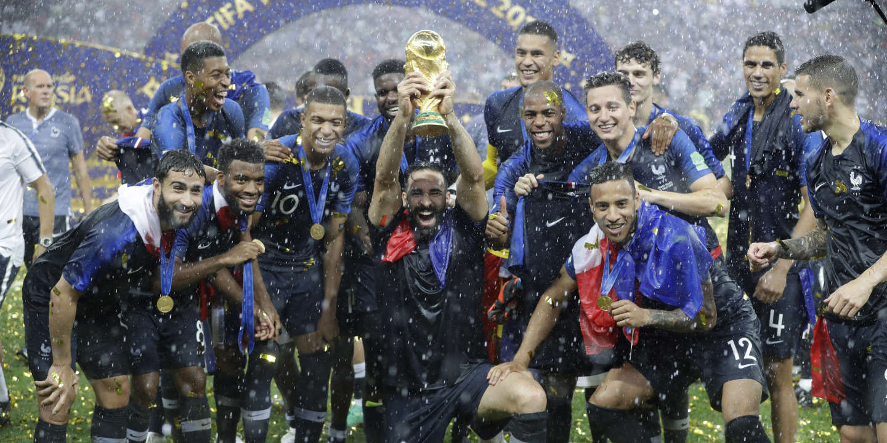

L'équipe de France de football, créée en 1904, est l'équipe nationale qui représente la France dans les
compétitions internationales
masculines de football, sous l'égide de la Fédération française de football (FFF). Elle sélectionne les meilleurs
joueurs français.
Ces derniers, composant cette équipe, sont traditionnellement appelés Les Tricolores ou encore Les Bleus. De nos
jours, c'est cette dernière appellation qui est la plus usitée.La France est la première sélection à avoir
remporté toutes les compétitions internationales
: Coupe du monde (1998 et 2018), Coupe des Confédérations (2001, 2003), Jeux olympiques (1984), son championnat
continental (1984, 2000). Cette performance est égalée par l'Argentine en 2004 et le Brésil, à l'issue des Jeux de
Rio 2016. En 2021, elle ajoute la Ligue des
nations à son palmarès, devenant ainsi la première formation européenne, et la seule à ce jour,
à avoir gagné l'ensemble de ces trophées.Le coq gaulois est le symbole de l'équipe et ses couleurs sont celles du
drapeau national, à savoir le bleu, le blanc et le rouge. Le maillot de l'équipe de France arbore deux étoiles
au-dessus du coq qui représentent ses victoires
en Coupe du monde 1998 et 2018, comme cela est le cas pour toutes les autres équipes nationales championnes du
monde